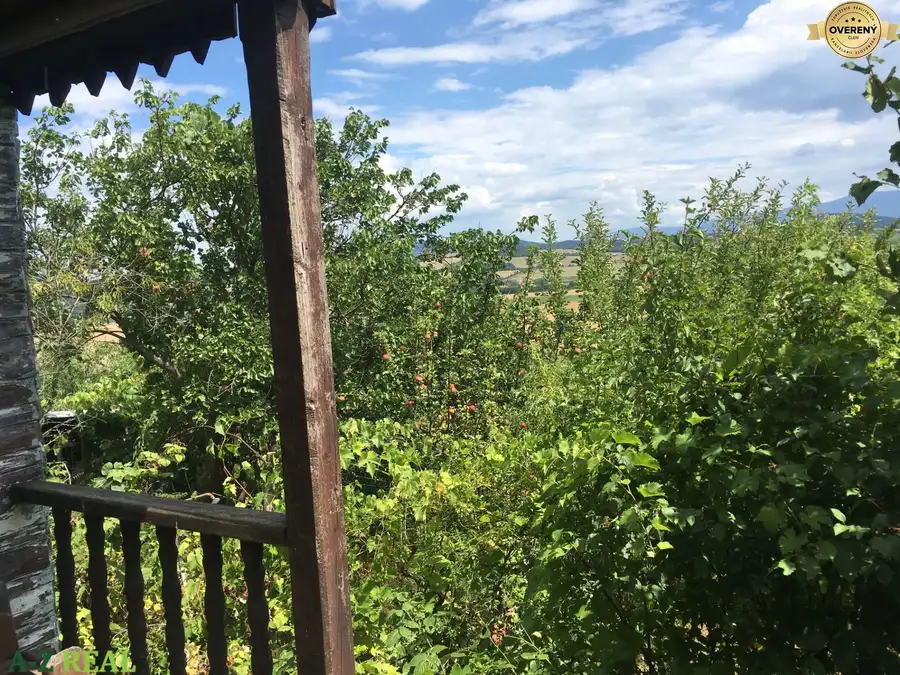
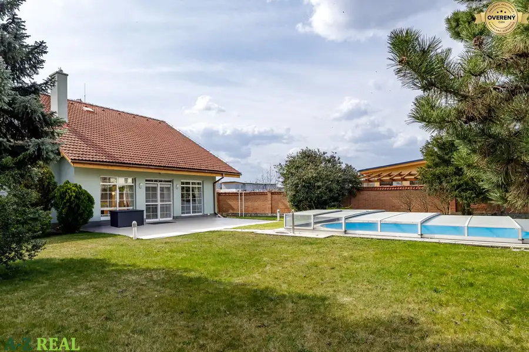
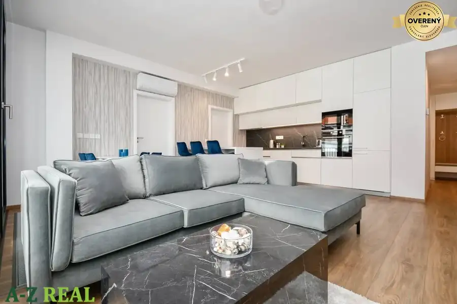

Na predaj objekt v Podunajských Biskupiciach- Bratislave II.
Podunajské Biskupice, Bratislava
- Plocha747 m²
- Stavčiastočne prerobený
O nehnuteľnosti
Na predaj objektu s vlastným oploteným pozemkom v Bratislave II. Podunajských Biskupiciach. Objekt bol využívaný ako materská škôlka a tiež ako dielňa na ľahkú výrobu. Budova je členená na dve časti. V súčasnosti je jedna časť využívaná na bývanie a druhá časť na výrobu a skladovanie. Budova má dve terasy každá s plochou 41 m2 a je z časti podpivničená.
Rozloha nadzemnej časti objektu je 499 m2, plocha podzemnej časti je 166 m2. Celková úžitková plocha spolu s terasami je 747 m2. Budova je ďalej členená na kancelárie, sklad, dielňu, toalety a bytovú časť.
Dispozičné riešenie:
Bytová časť má samostatný vchod a je členená na chodbu, 3 izby, kuchyňu, komoru, terasu, 2 x toaleta, kúpeľňa so sprchou a vaňou. Budova má zavedený plyn, elektrinu 220 aj 380 V. Vykurovanie je zabezpečené vlastným plynovým kotlom, ohrev vody tromi elektrickými bojlermi. Odpad je riešený žumpou s možnosťou pripojenia na verejnú kanalizáciu.
Okolo budovy sa nachádza pozemok s vlastným parkoviskom a s udržiavanou okrasnou záhradou s malým skladom na náradie a vlastnou studňou na polievanie záhrady. Rozloha celého pozemku je 2.775 m2.
Cena v RK .
Parametre
| Rozloha pozemku | 2775 m² |
|---|---|
| Zastavaná plocha | 350 m² |
| Celková rozloha | 747 m² |
| Úžitková plocha | 747 m² |
| Poschodie | neuvedené |
| Stav | čiastočne prerobený |
| Voda | verejný vodovod |
| El. napätie | 230V |
| Plyn | áno |
| Kanalizácia | áno |
| Vykurovanie | vlastné - plyn |
| Terasa | áno - 2 |
| Pivnica | áno |
| Parkovanie | vlastné vyhradené |
| Postavené z | Zmiešané |
| Strecha | po rekonštrukcii |
| Energetický certifikát | nie |
| Terén | rovina |
| Dátum zverejnenia | 7. 2. 2022 |
Kde to je
Podunajské Biskupice, Bratislava
Inzerát neuvádza presnú polohu, mapa ukazuje obec.
Otvoriť v mapáchMohlo by Vás zaujímať

Záhrady2 29 500 €Predaj záhrady so záhradnou chatkou okres Partizánske -Návojovce Navojovce, Návojovce 382 m² Ponúkam na predaj záhradnú chatku s pozemkom o rozlohe 382 m² v záhradnej oblasti Návojovce (okres Partizánske). Nehnuteľnosť sa nachádza na…
Rodinné domy10 720 000 €VÝHODNÁ PONUKA - predaj 6-izb. domu v Senci, s bazénom Senec 6-izbový386 m² Exkluzívne ponúkame na predaj 6-izbový rodinný dom v Senci, ktorý vyniká veľkorysým priestorom, vysokým štandardom prevedenia a dôrazom na komfort…
Byt10 2 200 €Na prenájom 4 izb. zariadený byt, s parkingom, Drotárska ul. Staré Mesto, Bratislava 4-izbový94 m²3. podlažie Ponúkame na prenájom moderný, plne zariadený, klimatizovaný 4 izbový byt na Hradnom kopci, na ulici Drotárska cesta v designovom bytovom dome, ktorý…